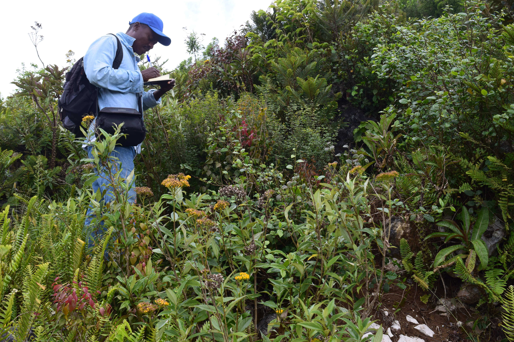
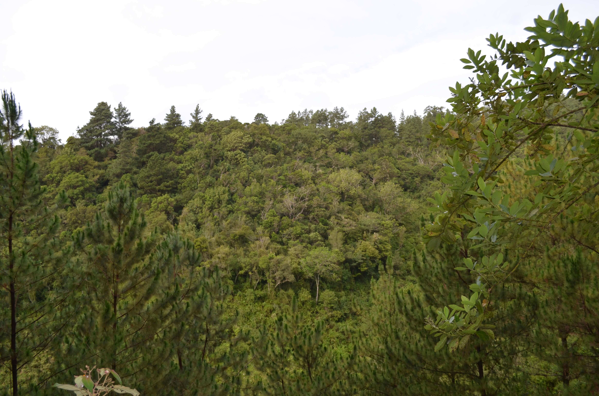
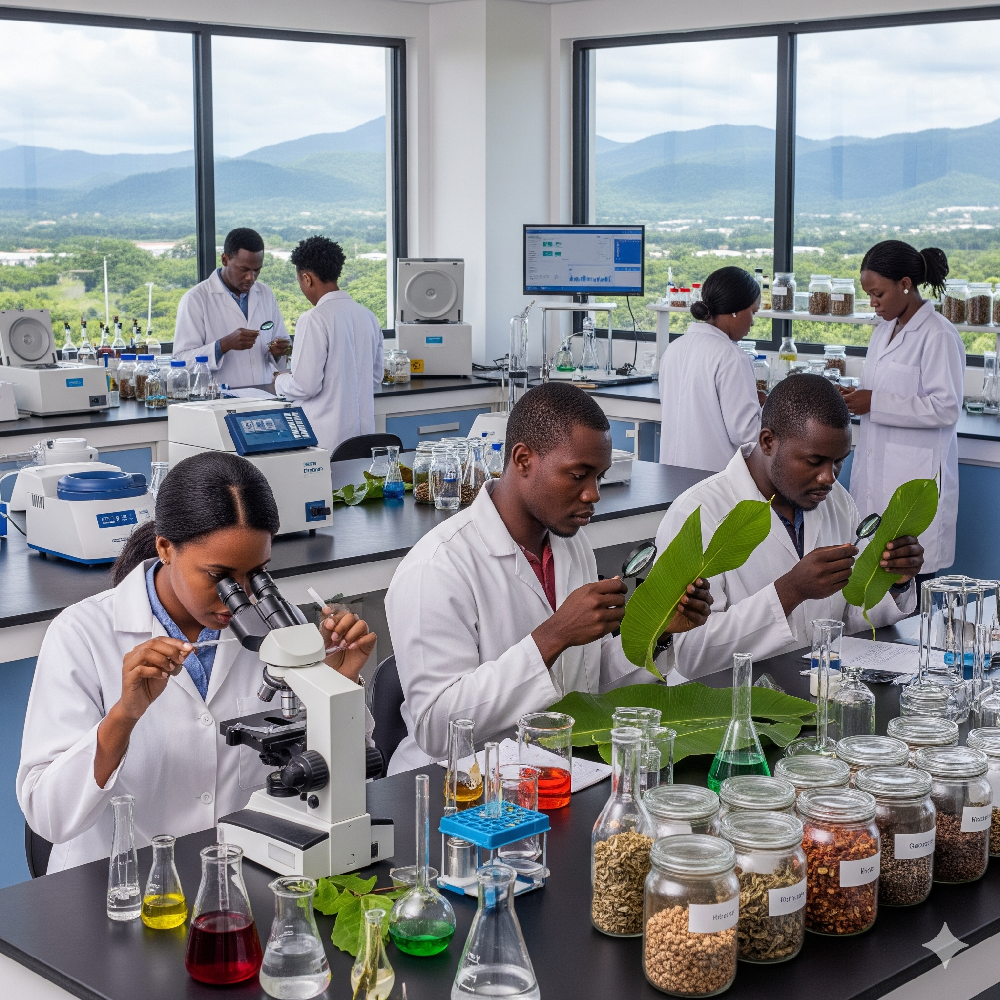
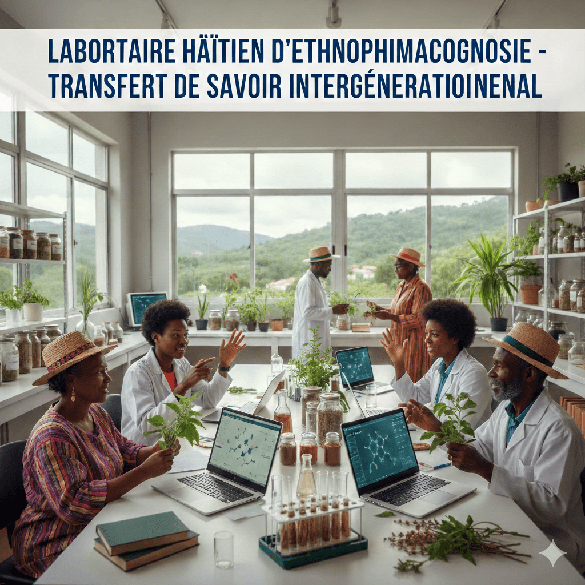

Inventaires
Connaître pour protéger : recensement systématique de la richesse taxonomique d'Haïti.
Reconnecter l'Homme à son environnement pour un avenir durable en Haïti.
Au Jardin Botanique des Cayes, nous croyons que la science est le pont qui nous permet de guérir notre terre pour guérir nos communautés.
Des méthodes rigoureuses pour une compréhension holistique.

Connaître pour protéger : recensement systématique de la richesse taxonomique d'Haïti.

Diagnostiquer les écosystèmes pour comprendre les interactions vitales.

Analyses génétiques et biologiques pour la conservation ex-situ des espèces.

Valorisation des plantes médicinales et lien entre savoirs traditionnels et santé.
L'application concrète de notre vision, du passé vers le futur.